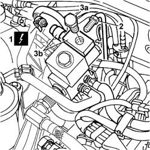

1058A44 cng pressure sensor - r r
- Path
- Procedures > 10 ENGINE > 1058 CNG FUEL SYSTEM > 1058A gas circuit multi point injection > 1058A44 cng pressure sensor - r r
- Kind
- repair procedure (removal / refitting; the operation number is the code)
- Applies to
- all engines; all production periods; only with equipment: BIPOWER
- Interactive page
- https://sloeber94.github.io/elrnDB-fDbl/en/#/2584548
Applies to: all engines; all production periods; only with equipment: BIPOWER
 Removing
Removing
 Refitting
RefittingPosition the vehicle on a lift.
Drain the high-pressure circuit as described in the specific operation 1042A02 C.N.G. - FUEL SYSTEM Safety check .
1. Disconnect the electrical connection for the methane pressure sensor.
 | Name | Connector |
|---|---|---|
1 | Methane pressure sensor | K54 |
2. Disconnect the high-pressure methane supply pipe.
3. Undo the bolt (3a) and remove the pressure sensor (3b) complete with connector.

Applies to: all engines; all production periods; only with equipment: BIPOWER
Refitting
RemovingFit the connector complete with methane pressure sensor, making sure to position the sealing ring underneath correctly.
Tighten to the specified torque the bolt securing the connector with methane pressure sensor.
 | Fastening | Component | Ø | Value (daNm) |
|---|---|---|---|---|
- | Bolt | CNG MPI PRESSURE SENSOR | - | 2.2 |
Connect the high-pressure methane pipe connector.
| Fastening | Component | Ø | Value (daNm) |
|---|---|---|---|---|
- | Nut | CNG SUPPLY LINE FITTINGS | - | (high pressure on pressure reduction unit) 2.5 |
Connect the electrical connection for the methane pressure sensor.
| Name | Connector |
|---|---|---|
- | Methane pressure sensor | K54 |
Manually set the CNG shut-off solenoids to the open position and check that the system is working.
Connect the Examiner diagnostic instrument in the 'Active Diagnosis' environment, select and run the 'Gas solenoids relay' heading to allow the solenoids to be opened and the operating pressure in the CNG system to be reset; read the pressure value given by the sensor (located on the pressure reduction unit in the engine compartment) which should be 11 bar or above, otherwise it will not be possible to switch from petrol to methane.
Remove the vehicle from the lift.
1042A06 C.N.G. - FUEL SYSTEM check for any leaks using electronic detector following operations .
Topics linked from this page (2)
- 1042A02 C.N.G. - FUEL SYSTEM Safety check
- 1042A06 C.N.G. - FUEL SYSTEM check for any leaks using electronic detector following operations